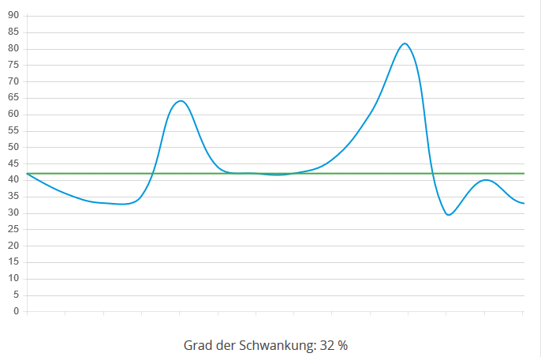
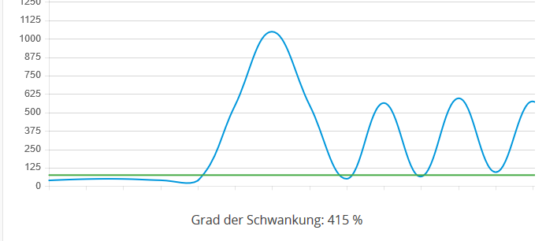
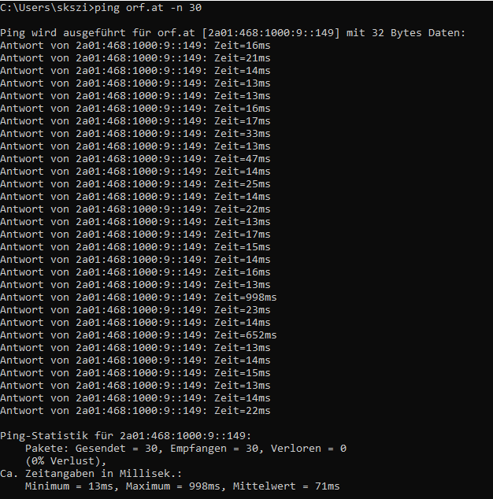

Liebe Community und Magenta Team,
Ich war eigentlich immer sehr zufrieden mit dem Internet, seit dem die Leitung aber verdoppelt wurde von 125 mbit auf 250 mbit habe ich Ping Schwankungen und Pings über 100 m/s zur Primtime (20:00 bis 23:00 Uhr)
- Wohnhaus mit 40 Partein
- PC ist mit einem Netzwerkkabel an der Fiber Box angeschlossen.
- 2 Wlangeräte im Netzwerk
- Spiele: Escape from Tarkov und Counter Strike
Magenta hat mir ein neues Modem zukommen lassen, leider hat sich dadurch nichts verbessert. Wenn ich den Router pinge 30 mal Zeit=1ms.
Ist die Leitung evtl. überlastet?!




Hallo @Stevenson
Was passiert wenn du die 2 Geräte diese über WLAN verbunden sind vom Netz nimmst?
Tritt das Problem nur zur Primetime auf?
Also - mag vielleicht gar nichts damit zu tun haben.
Aber ich hatte das bei meinem DSL auch - gut da bring ich auch nur max 37Mbit drüber aber stellenweise waren die Pings auch sehr hoch.
Einmal hatte die A1 tatsächlich ein Problem beim Einmessen, die anderen Male war das Problem ganz simple - ich hab aber Wochen gebraucht, bis ich drauf gekommen bin.
")
Meine Tochter hatte am Notebook ein File mit 8GB und das hat sie in den Sync in Richtung OneDrive gestellt.
Täglich war meine Leitung dicht und täglich wurde der Upload aufs Neue gestartet. Bis ich ihren Rechner von Netz genommen habe und alles war gut... Dann wusste ich was es war
")
Kann ja durchaus auch sein, dass da irgendwas zieht - große Updates oder ähnliches, wobei bei diesem Tarif in dieser Größe eher nicht so wahrscheinlich. Trotzdem auch an sowas denken.
Danke für die Antworten.
Habe die WLAN Geräte jetzt aus dem Netzwerk genommen. Leider Schwankt der Ping immer noch um ca. 35%.
Auch wenn nur der PC hängt ist beim Ping Test die Leitung nicht konstant.
Mein Nachbar hat auch Magenta Kabel und meint es läuft auch nicht ganz rund.
Grüße
OK Danke.
Das heißt die Hotline hat mal die HW getauscht aber es hat nichts bewirkt.
Dann würde ich nochmal die Hotline anrufen - da muss dann mehr geprüft werden.
Wenn nun alle Geräte weg sind und es immer noch nicht geht und beim Nachbarn auch Probleme sind, dann sollte da unbedingt eine Prüfung gemacht werden.
Wird wohl das übliche Puma6-Chipfehler-Problem sein. Magenta Fiberbox hat dieses Problem, Fiberbox 2 soweit ich weiß nicht mehr. Gibt dazu auch einige Threads hier. Wenn es das ist, wirst du es nicht lösen können ohne dass Magenta dir eine Fiberbox 2 gibt. Und die gibt es derzeit nur für die Gaming-Tarife. "Gaming-Tarif" bei Magenta heißt in Wahrheit nur "hier hast du Internet + ein Modem ohne Chipfehler" und wird als "niedriger Ping" verkauft.
Am 21.2.2021 um 01:48 schrieb seldom:
Wird wohl das übliche Puma6-Chipfehler-Problem sein. Magenta Fiberbox hat dieses Problem, Fiberbox 2 soweit ich weiß nicht mehr. Gibt dazu auch einige Threads hier. Wenn es das ist, wirst du es nicht lösen können ohne dass Magenta dir eine Fiberbox 2 gibt. Und die gibt es derzeit nur für die Gaming-Tarife. "Gaming-Tarif" bei Magenta heißt in Wahrheit nur "hier hast du Internet + ein Modem ohne Chipfehler" und wird als "niedriger Ping" verkauft.
Auch die FB 2 ist nach wie vor davon betroffen.
{kind=link}
{kind=link}
{kind=link}